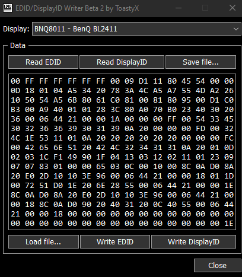
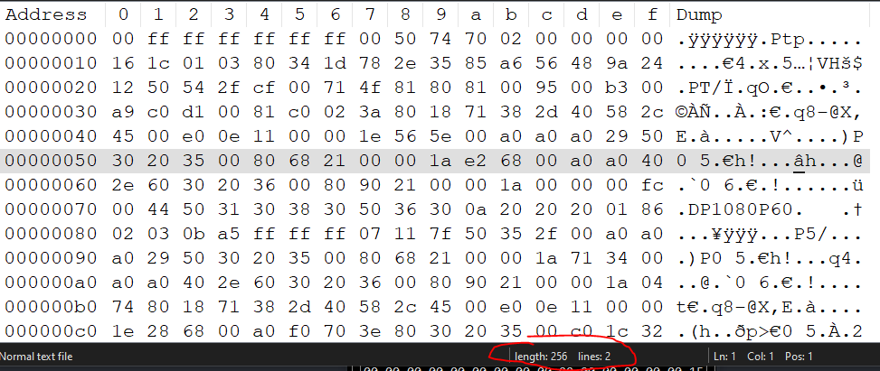
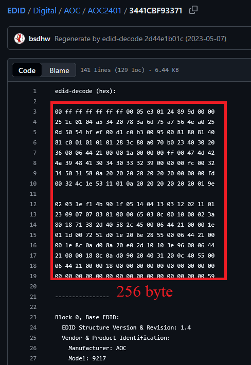

My dummy HDMI only support 1920x1080 60Hz, but all my real displays is 16:10. It leads to a problem that every time I switch devices, the Windows interface is forced to scale to the new resolution with a different ratio. After that, some apps will be broken GUI. So I need to patch EDID to change my HDMI dummy resolution.
First, all we need is:
- Computer with AMD or NVIDIA GPU (HDMI dummy pluged in to GPU). If yours PC is a laptop, make sure that GPU is out to HDMI ports.
- EDID Writer tool: EDWriter
- EDID databases: EDID repo from BSD Hardware Project: https://github.com/bsdhw/EDID
Let’s go!
Open EDWriter and select right HDMI dummy display, what you need to patch, press Read EDID to read infor from HDMI dummy.
If EDWriter notify about any error like Invalid checksum, Invalid ProductID,… Dont worry about it.

Now, press Save file... to save yours EDID to file for backup and check EDID length.
Open edid saved file in a any hex editor or notepad++.
Check length of EDID.

In my case, EDID length is 256 byte.
Now access to EDID repo to find EDID in resolution what you want. In my case, is 1920x1080.

Search and find any EDID have 256byte and support resolution your need. Copy it and save it as binary file in hex editor.
Open EDWriter again, press Load file... and open new edid binary file.
Press Write EDID if EDWriter warning Different Product ID , ignore it and write.
Unplug and plug HDMI Dummy again. Now we have new HDMI dummy with new resolution support.